2041년, 서울 일부 지역에서 목과 어깨가 앞으로 굽거나 척추가 특정한 각도로 휘어 있는 등 유사한 신체 변화를 보이는 사례들이 반복적으로 관찰되기 시작했다. 사례자들은 서로 다른 연령과 직업, 생활 배경을 가지고 있었지만, 신체를 완전히 펴지 않은 자세가 일상적인 상태로 유지된다는 공통적인 특징을 보였다.
초기에는 개인의 생활 습관이나 자세에서 비롯된 변화로 여겨졌으나, 서로 관련이 없는 사람들에게서 목, 어깨, 척추, 무릎 등 특정 부위를 중심으로 비슷한 변화가 반복적으로 확인되면서 하나의 공통된 현상일 가능성이 제기되었다.
연구진은 변화가 나타난 원인을 확인하기 위해 사례자들의 신체 상태를 기록하고, 이들의 거주 환경과 생활 방식에 대한 추적 조사를 시작하였다. 이 기록은 이후 공간과 신체 변화의 관계를 조사하는 출발점이 되었다.
변화된 사람들의 모습
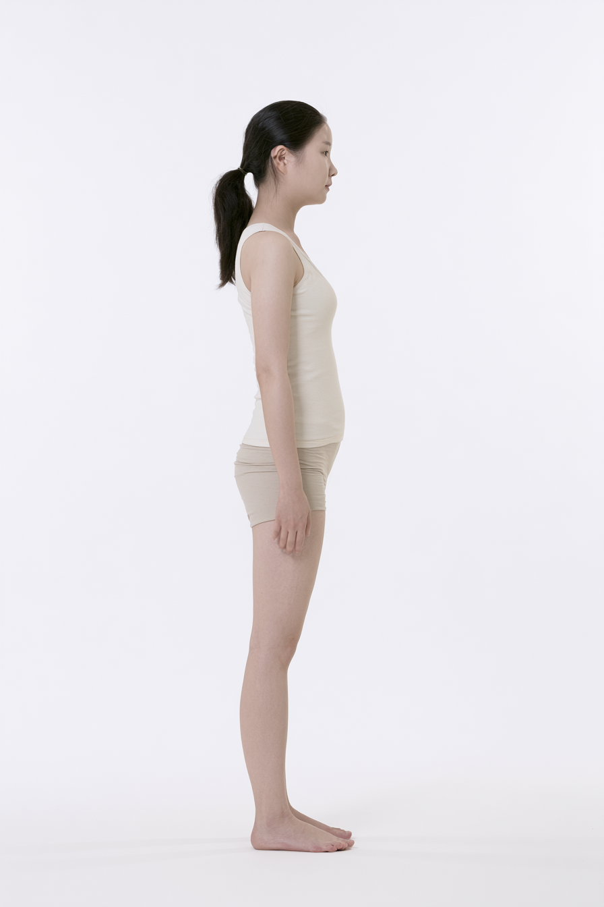
2025OBSERVATION 01 — SHOULDERShoulder Width2025 438 mm → 2042 361 mm
2040OBSERVATION 01 — SHOULDERShoulder Width2025 438 mm → 2042 361 mm
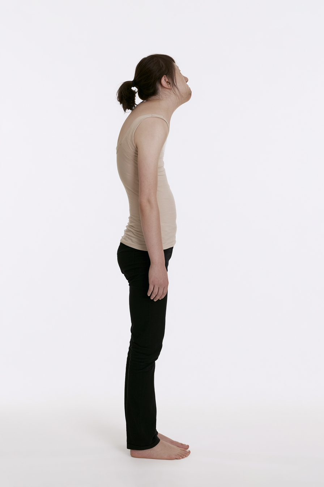
2042OBSERVATION 01 — SHOULDERShoulder Width2025 438 mm → 2042 361 mm
사례자 조사
신체 변화가 관찰된 사람들의 생활 기록을 비교한 결과, 신체적 특징보다 먼저 하나의 공통된 주거 조건이 발견되었다.
이들은 모두 서울에 거주하고 있었으며, 최저주거기준에 미치지 못하는 협소한 주거 공간에서 장기간 생활하고 있었다.
특히 변화의 정도가 큰 사람일수록 하나의 공간에서 수면, 식사, 업무, 수납 등 여러 생활 기능을 동시에 수행하고 있었다.
신체 변화가 단순한 개인적 습관이 아니라 생활 공간의 크기와 사용 방식에 관계되어 있을 가능성이 제기되었다.
신체 변화가 관찰된 사람들의 생활 기록을 비교한 결과, 신체적 특징보다 먼저 하나의 공통된 주거 조건이 발견되었다.
이들은 모두 서울에 거주하고 있었으며, 최저주거기준에 미치지 못하는 협소한 주거 공간에서 장기간 생활하고 있었다.
특히 변화의 정도가 큰 사람일수록 하나의 공간에서 수면, 식사, 업무, 수납 등 여러 생활 기능을 동시에 수행하고 있었다.
신체 변화가 단순한 개인적 습관이 아니라 생활 공간의 크기와 사용 방식에 관계되어 있을 가능성이 제기되었다.
신체 변화 사례의 거주지와 공통점
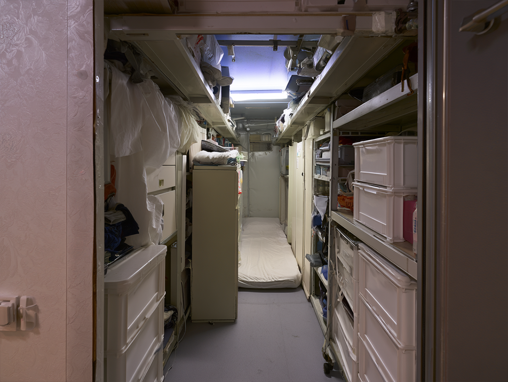
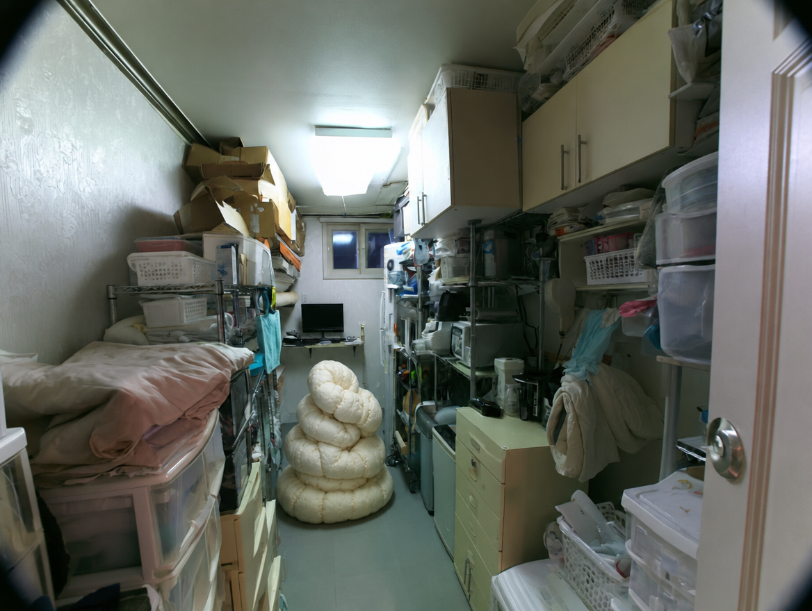
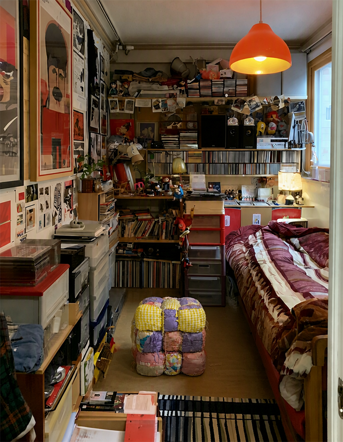
*수면과 작업이 중첩된 공간
신체 변화 사례의 거주지를 추적한 결과, 사례는 서울 전역에 균일하게 나타나지 않고 일부 지역을 중심으로 집중되는 경향을 보였다.
서로 다른 연령과 직업을 가진 사람들이었지만, 이들이 거주한 지역에서는 몇 가지 공통적인 환경적 조건이 확인되었다.
사례가 집중된 지역은 직장, 교육, 문화, 상업 시설에 대한 접근성이 높고 대중교통을 통해 주요 생활권으로 빠르게 이동할 수 있는 지역이었다.
생활 편의성과 지역에 대한 선호가 높은 만큼 거주 수요 역시 지속적으로 유지되었으며, 높은 주거비를 감당하기 어려운 일부 거주자들은 주거 면적을 줄이는 대신 해당 지역에 계속 머무르는 방식을 선택하고 있었다.
그러나 이러한 신체 변화가 해당 지역의 거주자 모두에게 나타난 것은 아니었다. 사례를 개별적으로 조사한 결과, 변화는 경제적 여건에 비해 주거비가 높은 지역에 장기간 거주하며, 최저주거기준에 미치지 못하는 공간에서 생활하는 사람들에게 집중적으로 나타났다.
이들은 더 넓은 주거지를 선택할 수 있는 다른 지역으로 이동하기보다 현재의 직장, 관계, 취향과 생활권을 유지하는 것을 우선했으며, 그 과정에서 자신의 생활에 필요한 면적을 지속적으로 줄여왔다.
정체불명의 장치 발견
사례자들의 주거 환경을 조사하는 과정에서 연구진은 기존의 생활용품으로는 용도를 특정하기 어려운 자작 장치들을 발견하였다. 금속 파이프와 천, 스트랩, 완충재 등 일상에서 쉽게 구할 수 있는 재료로 제작된 장치들은 신체에 직접 착용하거나 특정 자세를 고정할 수 있는 구조를 가지고 있었다.
처음에는 개인의 필요에 따라 만들어진 임시 생활도구로 추정되었으나, 이후 서로 다른 사례자의 주거지에서도 형태는 다르지만 유사한 구조와 기능을 가진 장치들이 반복적으로 발견되었다.
발견된 장치의 구조와 사용
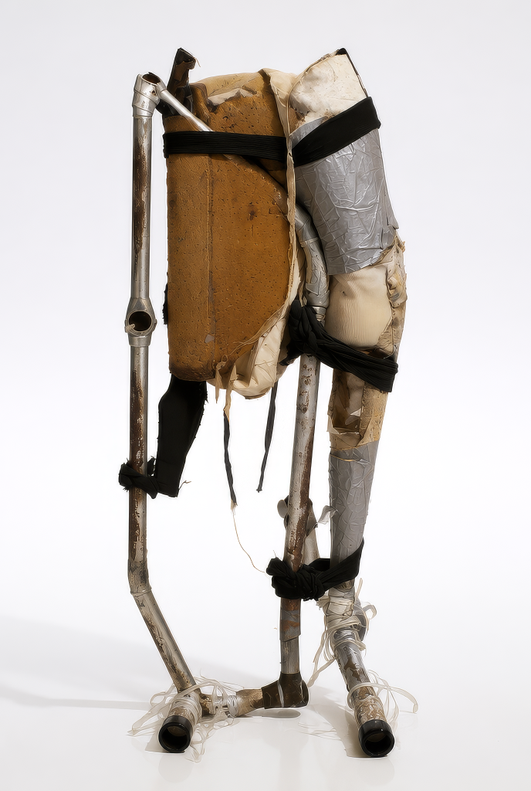
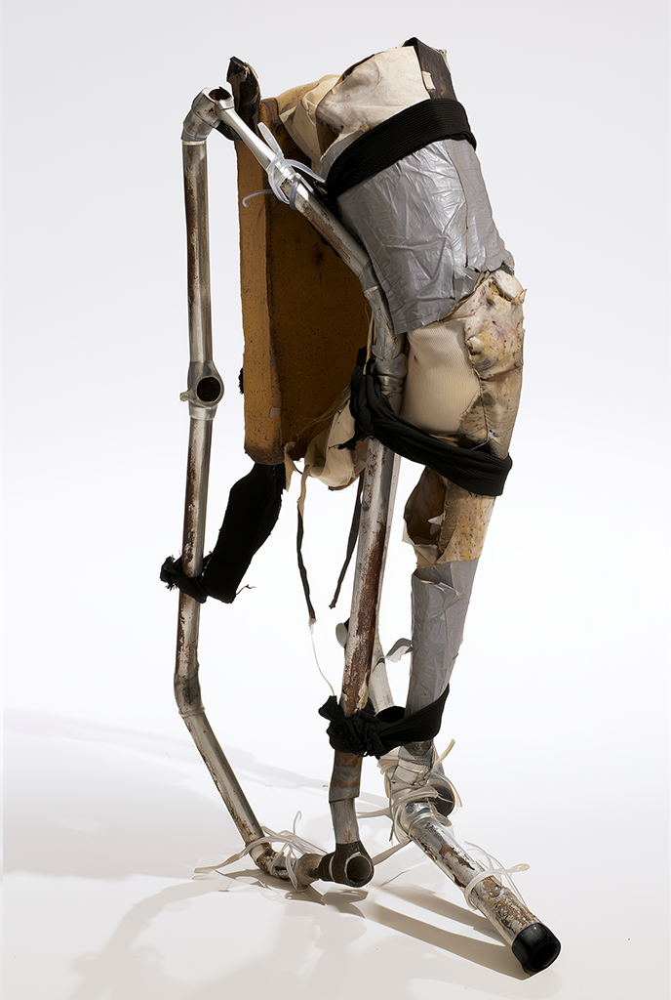
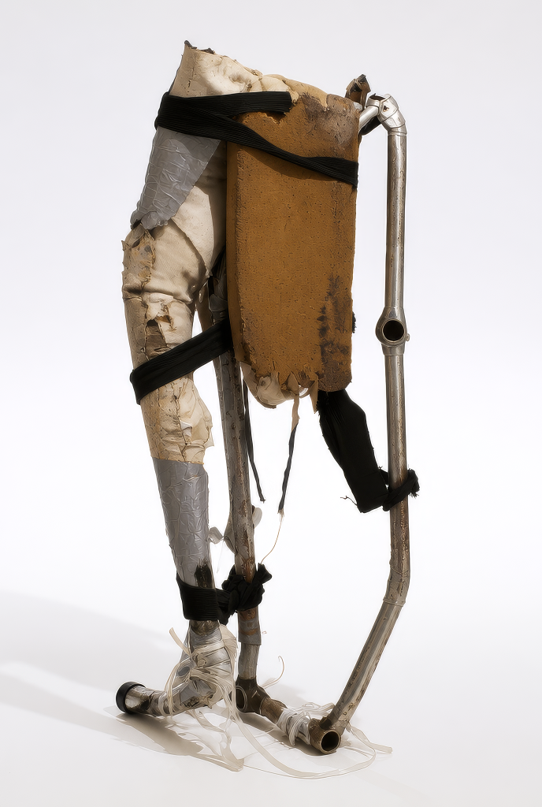
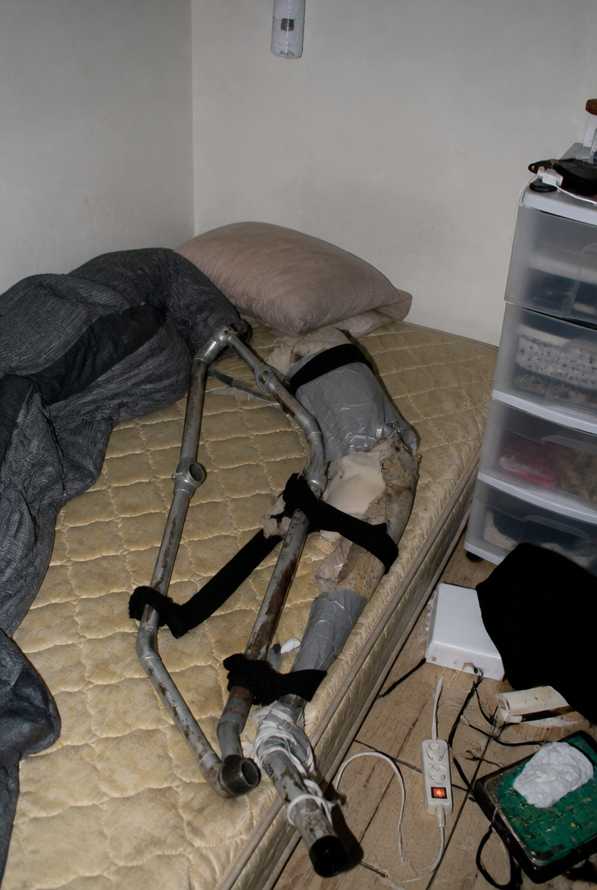
*서울 동작구에서 발견
장치들은 시중에서 판매되는 일반적인 가구나 생활용품과 달리, 사용자의 신체에 직접 고정하거나 특정 자세를 유지하도록 제작되어 있었다. 연구진은 이 장치들이 신체 변화 사례와 함께 발견된다는 점에 주목하고, 장치의 사용 방식과 신체 변화 사이의 관계를 추적하기 시작하였다.
대부분의 장치는 주거공간에서 부족한 면적을 확보하기 위해 신체의 폭을 줄이거나, 몸을 접거나, 기존 가구가 차지하던 기능을 신체로 옮기는 방식으로 제작되어 있었다. 각기 다른 형태의 장치들은 공간에 맞추어 신체의 사용 방식을 변화시킨다는 공통점을 보였다.
대부분의 장치는 주거공간에서 부족한 면적을 확보하기 위해 신체의 폭을 줄이거나, 몸을 접거나, 기존 가구가 차지하던 기능을 신체로 옮기는 방식으로 제작되어 있었다.
각기 다른 형태의 장치들은 공간에 맞추어 신체의 사용 방식을 변화시킨다는 공통점을 보였다.
대부분의 장치는 주거공간에서 부족한 면적을 확보하기 위해 신체의 폭을 줄이거나, 몸을 접거나, 기존 가구가 차지하던 기능을 신체로 옮기는 방식으로 제작되어 있었다.
각기 다른 형태의 장치들은 공간에 맞추어 신체의 사용 방식을 변화시킨다는 공통점을 보였다.
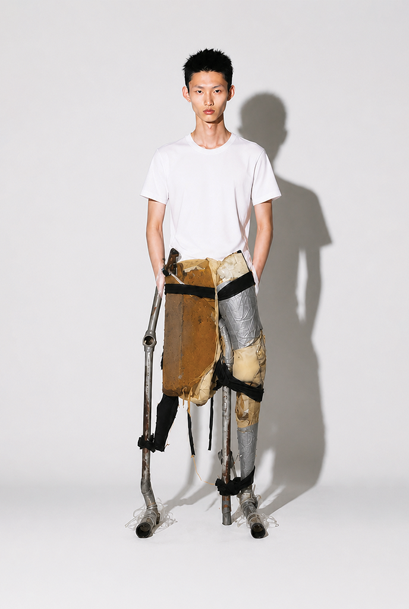
*착용
사용흔적의 비교
장치의 표면에서는 반복적인 신체 접촉으로 인한 마모와 압착, 찢어짐, 변형이 확인되었다.
천과 완충재는 특정 부위를 중심으로 닳거나 눌려 있었으며, 연결부에는 재봉과 테이핑을 이용해 반복적으로 보수한 흔적이 남아 있었다.
이러한 흔적은 장치가 일시적으로 제작된 물건이 아니라, 사용자의 신체에 맞춰 지속적으로 사용되고 수정되어 온 생활 도구였음을 보여준다.
새로운 적응 방식의 확인
수집된 장치의 형태와 사용 흔적을 비교한 결과, 서로 다른 환경에서 제작되었음에도 신체를 접거나 압축하고 특정 자세를 유지한다는 공통된 사용 방식이 확인되었다. 장치들은 좁은 공간 자체를 변화시키는 대신, 사용자의 자세와 움직임을 공간에 맞게 조정하여 부족한 면적을 보완하고 있었다.
연구진은 이를 단순한 생활도구의 사용이 아닌, 공간에 맞추어 신체 사용 방식을 변화시키는 새로운 적응 방식으로 분류하였다. 이후 장치가 유지하는 자세와 사례자에게 나타난 신체 변화를 비교하며 두 요소의 관계에 대한 조사가 시작되었다.
신체 접힘 및 압축
*접힘 및 압축 테스트 사진
사례자들의 주거 환경과 생활 기록을 비교한 결과, 서로 다른 사람들에게서 제한된 공간을 사용하는 유사한 행동이 반복적으로 관찰되었다.
이들은 부족한 공간을 가구의 재배치나 공간 확장을 통해 해결하기보다, 자신의 신체가 차지하는 면적과 부피를 줄이는 방식으로 주어진 환경에 적응하고 있었다.
가장 빈번하게 나타난 방식은 신체를 접는 행동이었다. 무릎과 고관절을 몸통 가까이 당기거나 허리와 목을 굽혀 신체의 길이를 줄였으며,
수면과 휴식처럼 비교적 오랜 시간 유지되는 활동에서도 이러한 자세가 반복되었다. 충분히 눕거나 몸을 펼칠 수 없는 공간에서는 신체를 완전히 펴는 것이
오히려 비효율적인 자세가 되었고, 몸을 접은 상태가 일상적인 생활 자세로 자리 잡기 시작했다.
여러 사람이 하나의 제한된 공간을 사용하는 사례에서는 신체를 서로 겹치거나 수직으로 배치하는 방식도 확인되었다.
바닥 면적을 각자 나누어 사용하는 대신 한 사람의 신체 위나 사이에 다른 신체를 위치시키면서 동일한 면적을 중첩해 사용하는 것이다.
이는 공간을 수평적으로 확장할 수 없는 상황에서 신체의 배치를 변화시켜 공간의 점유 방식을 재구성한 사례로 기록되었다.
또한 일부 사례자들은 공간의 경계에 맞춰 신체 전체를 압축하는 행동을 보였다.
정해진 폭과 높이 안에 몸을 위치시키기 위해 무릎을 세우거나 상체를 굽히고, 팔과 다리를 몸통 가까이 모아 신체가 차지하는 부피를 최소화하였다.
이 과정에서 공간이 신체에 맞춰 구성되는 것이 아니라, 신체가 주어진 공간의 형태와 크기에 맞춰 조정되는 역전된 관계가 나타났다.
연구진은 이러한 행동을 각각 신체 접힘(Body Folding), 신체 적층(Body Stacking), 신체 압축(Body Compression)으로 기록하였다.
방식에는 차이가 있었지만 모두 공간 자체를 변화시키지 않은 채 신체의 형태와 자세, 배치를 변화시켜 부족한 공간을 보완한다는 공통된 원리를 가지고 있었다.
특히 이러한 자세가 일시적인 행동에 그치지 않고 수면, 휴식, 식사와 같은 일상적인 활동에서 장기간 반복된다는 점에 주목하였다.
신체를 공간에 맞추는 행동이 반복되면서 특정 자세를 보다 오래 유지하거나 신체를 원하는 형태로 고정하기 위한 보조 수단이 필요해졌고,
이는 사례자의 주거지에서 발견된 여러 자작 장치의 사용 방식과도 연결되었다.
연구진은 이를 단순히 좁은 공간에서 취하는 불편한 자세가 아니라, 제한된 주거 환경에 대응하기 위해 신체의 사용 방식을 변화시키는 하나의 새로운 적응 방식으로 정의하였다.
이후 조사는 이러한 반복적인 자세와 장치의 사용이 사례자들에게서 관찰된 신체 변화와 어떠한 관계를 가지는지를 확인하는 단계로 이어졌다.
장치와 신체 변화의 관계
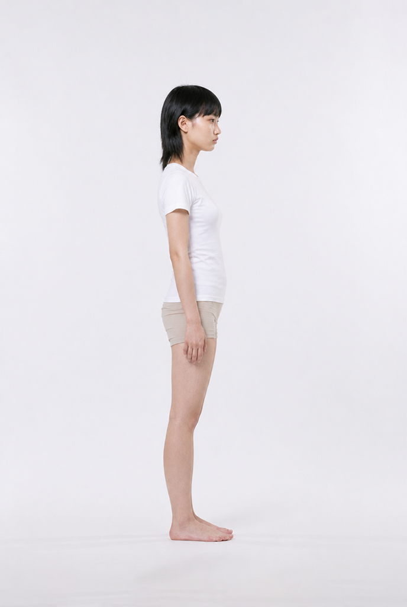
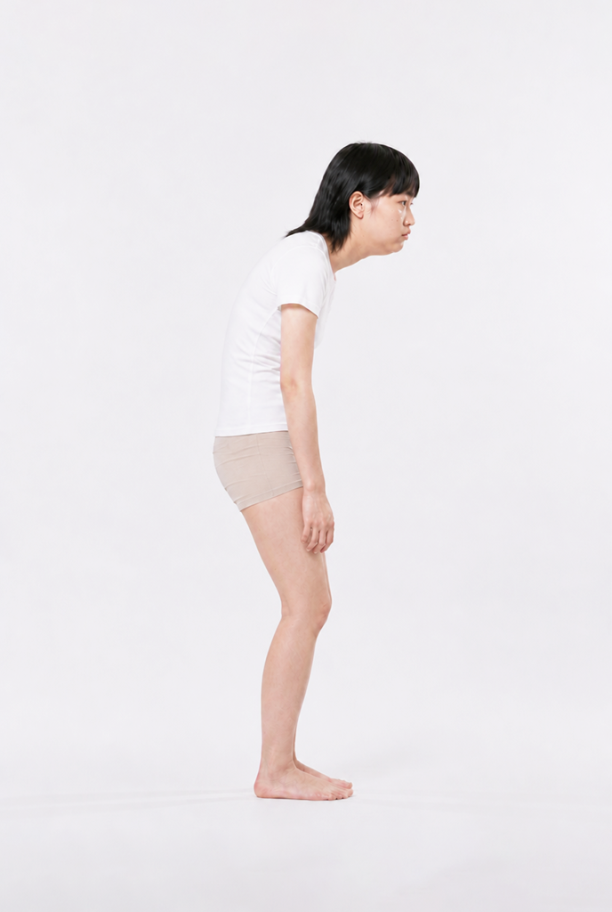
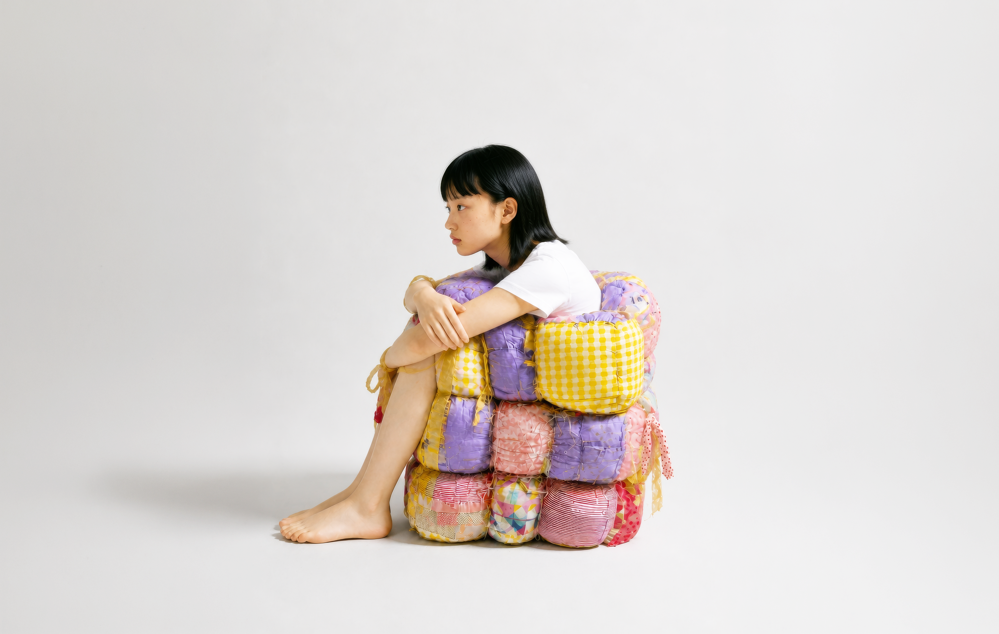
*지속적으로 장치를 착용할 경우 신체 변화 사례
수집된 장치의 사용 방식과 사례자들의 신체 기록을 비교한 결과, 장치가 유지하는 자세와 사용자에게 나타난 신체 변화 사이에서 반복적인 대응 관계가 확인되었다.
목을 굽힌 상태로 유지하는 장치를 사용한 사례에서는 목과 어깨의 전방 이동이, 신체의 폭을 줄이기 위해 어깨를 안쪽으로 고정하는 장치를 사용한 사례에서는 어깨와 상체의 변화가 함께 관찰되는 식이었다.
장치에 남아 있는 사용 흔적 역시 이러한 관계를 뒷받침했다. 신체가 반복적으로 접촉한 부분에는 마모와 압착이 집중되어 있었으며,
스트랩과 프레임의 변형 방향은 사례자들이 일상적으로 유지했던 자세와 유사하게 나타났다. 일부 장치에서는 같은 부위가 반복적으로
보수되거나 사용자의 신체에 맞춰 구조가 수정된 흔적도 발견되었다. 이는 장치가 완성된 형태로 사용된 것이 아니라, 사용자의 신체와 생활 방식에 맞춰 지속적으로 변화해왔음을 보여준다.
연구진은 장치 자체가 신체 변화의 직접적인 원인이라고 단정하기보다,
협소한 공간에서 반복되는 자세와 이를 유지하기 위한 장기간의 장치 사용이 함께 신체 사용 방식의 변화에 관여했을 가능성에 주목하였다.
공간에 맞춰 몸을 접고 압축하는 행동이 반복되고, 장치는 이러한 자세를 더 오랜 시간 유지할 수 있도록 보조하면서 특정한 신체 사용 방식이 일상적으로 고착되는 과정이 나타났다.
시간이 지나면서 장치의 역할에도 변화가 나타났다. 초기 장치가 기존의 신체를 좁은 공간에 맞추기 위해 몸을 접고 압축하는 역할을 했다면,
이후에는 이미 변화한 신체를 지지하고 변화된 자세를 보다 편안하게 유지하기 위한 장치들이 등장하기 시작했다. 장치는 더 이상 공간에 신체를 맞추기 위한 도구에만 머물지 않고,
변화한 신체와 함께 생활하기 위한 보조 기구로 확장되었다
이를 통해 연구진은 공간의 제약 → 반복적인 자세 → 장치의 사용 → 신체 사용 방식의 변화 →
변화한 신체를 위한 새로운 장치로 이어지는 순환적인 적응 구조를 확인하였다. 공간에 대한 적응은 하나의 행동이나 장치에서 끝나는 것이 아니라,
신체와 장치가 서로 영향을 주고받으며 지속적으로 변화하는 과정으로 나타났다. 공간에 맞추기 위해 만들어진 장치는, 결국 변화한 신체를 위한 장치로 다시 만들어졌다.